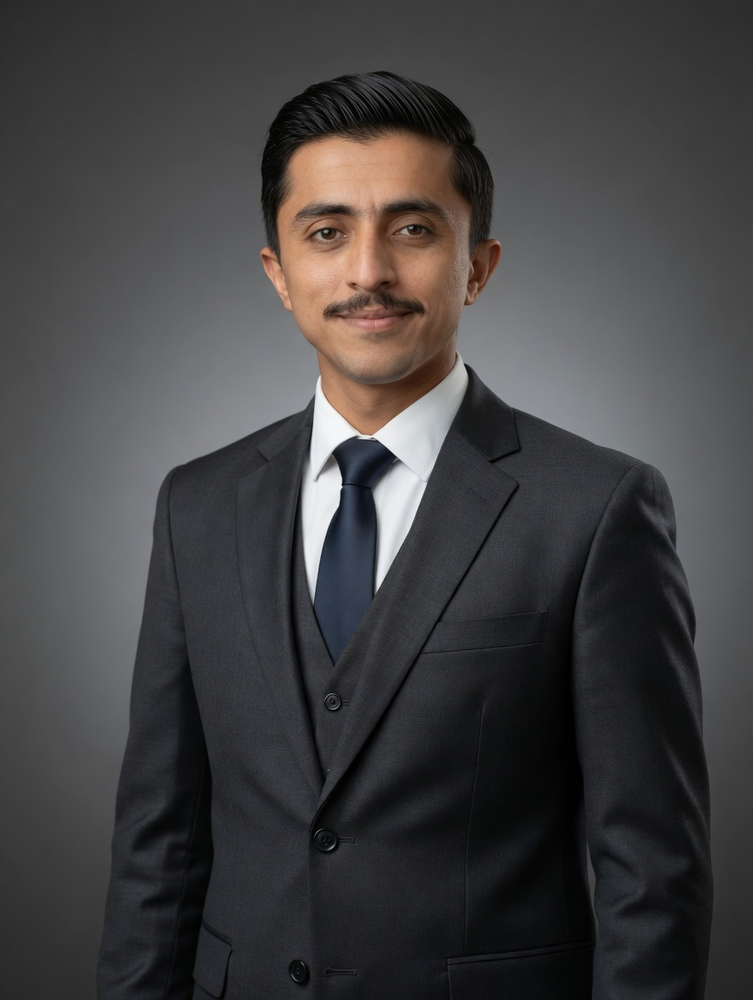

Perimeter surveillance in fog and darkness
An edge system that fuses thermal and RGB video to flag intrusions, vehicles and weapon outlines when normal cameras fail. Open-vocabulary detection plus a Swin Transformer backbone.
AI engineering student at SZABIST Islamabad. I've shipped segmentation pipelines on satellite imagery, graph models on biomedical data, and now focus on RAG, LLM fine-tuning and agentic systems.
Microsoft Learn Student Ambassador · Aspire Leaders, Harvard Business School 2025
An edge system that fuses thermal and RGB video to flag intrusions, vehicles and weapon outlines when normal cameras fail. Open-vocabulary detection plus a Swin Transformer backbone.
A Vision Transformer pipeline that finds surface anomalies from visible and thermal images, with SAM and Swin backbones for precise segmentation in industrial settings.
A dual-view system that reads multispectral satellite data for terrain and object detection, tracking spatial change across areas of interest.
Sep 2025 to present
Researching prompt methods that make LLMs faster, better at reasoning and easier to adapt, then turning them into automation that saves businesses time and cost.
Apr to Aug 2024
Built a SAM-based pipeline for satellite imagery and biomedical GNNs that predict gene-disease links. Tracked experiments with Weights & Biases and Hugging Face Hub.
2025 to present
Independent work on fine-tuning transformers for enterprise use, with a focus on lower compute cost without losing accuracy.
RAG, LLM fine-tuning, prompt engineering, AI agents, multi-agent systems, reinforcement learning.
Segment Anything, Vision Transformers, Swin, GroundingDINO, CLIP, multispectral and thermal imagery.
PyTorch, Hugging Face, Azure, Streamlit, Gradio, Git, Docker basics.

I'm Inayat, a final-stretch AI student in Islamabad. I like problems where the data is noisy and the result has to hold up outside the demo. I teach Python and AI workshops and mentor students on the side.